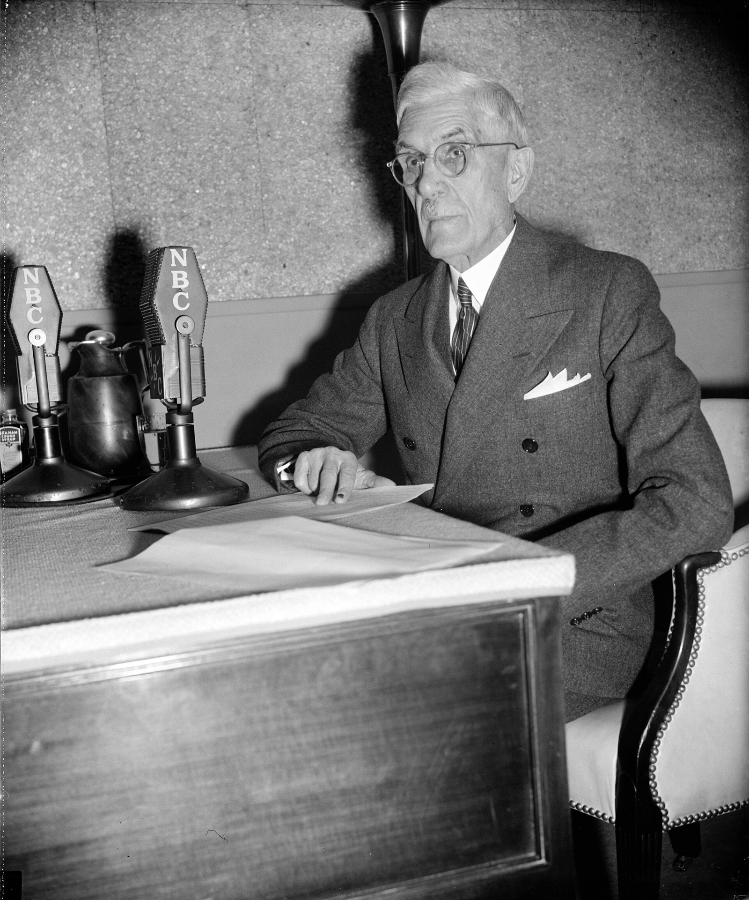

Directions: Fill in the chart as we study each critic. Keep this page in your notebook. You will use it again on the review day before the unit test.

| Critic | Charge against the New Deal | Cure proposed, or limit imposed | Voters or power behind it |
|---|---|---|---|
| Huey Long | |||
| Francis Townsend | |||
| Charles Coughlin | |||
| American Liberty League | |||
| Supreme Court |
The two fronts in one sentence. Finish this sentence in your own words, using at least two rows of the chart as evidence. By 1935 the New Deal was being pulled apart because...
| Critic | Charge against the New Deal | Cure proposed, or limit imposed | Voters or power behind it |
|---|---|---|---|
| Huey Long | It did too little. It left great fortunes untouched while families lived in poverty. | Share Our Wealth: cap large fortunes and use the proceeds to guarantee every family wealth of around $5,000, with an old-age pension of thirty dollars a month. | A national radio audience and Share Our Wealth clubs claiming millions of members, with a possible challenge to Roosevelt in 1936. |
| Francis Townsend | It did too little for the old, who had no income of their own and whom charity reached least. | The Townsend Plan: two hundred dollars a month to every citizen over sixty who retired and spent the payment within the month. | Townsend clubs in nearly every congressional district and petitions carrying millions of names. |
| Charles Coughlin | It protected the money system and the bankers and financiers who ran it. | As summaries of his broadcasts describe it, monetary change and public control of key industries, organized through the National Union for Social Justice, founded in November 1934. | A weekly radio audience counted in the tens of millions, organized into a political membership. |
| American Liberty League | It did too much. It threatened property, piled up public debt, and moved toward government control of business. | A return to a narrow reading of the Constitution, with federal power and spending held within strict limits. | Wealthy businessmen and conservative Democrats, with money, newspapers, and lawyers, but no mass membership. |
| Supreme Court | It passed the limits of the Constitution, taking lawmaking power from Congress and reaching business reserved to the states. | No cure proposed. The limit was voiding: Schechter (1935) struck the National Industrial Recovery Act, and Butler (1936) struck the AAA processing tax. | The authority of the Constitution as the Court read it, exercised by nine justices in unanimous decisions in these two cases. |
The two fronts in one sentence. Strong answers hold both directions in one sentence. On one side, movements with radio audiences, clubs, and petitions demanded more than the New Deal had given, above all security in old age and a limit on great fortunes. On the other, the Liberty League argued the New Deal had already gone too far, and the Supreme Court wrote part of that argument into law by voiding the recovery and farm acts.